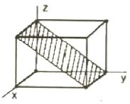
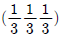
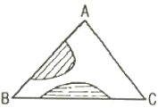
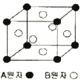
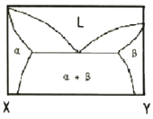

주조산업기사 (2010-07-25 기출문제)
1과목: 금속재료
1. 다음 금속 중 중금속에 해당되는 것은?
- Al
- Mg
- Be
- Cu
(정답률: 알수없음)

2. 리드 프레임(Lead frame) 재료에 요구되는 성능이 아닌 것은?
- 본딩(bonding)하기 용이하도록 우수한 도금성을 가질 것
- 보다 작고 엷게 하기 위하여 강도가 클 것
- 재료의 치수정밀도가 높고 잔류응력이 클 것
- 고집적화에 따라 열방산이 좋은 것
(정답률: 알수없음)
3. 다음 중 배빗메탈(babbit metal)에 해당되는 것은?
- 주석계 화이트메탈
- 납계 화이트메탈
- 구리계 베어링합금
- 오일리스 베어링합금
(정답률: 알수없음)
4. 다음 중 금속의 소성가공 방법이 아닌 것은?
- 압연가공
- 단조가공
- 주조가공
- 압출가공
(정답률: 알수없음)
5. 500~600℃까지 가열해도 뜨임 효과에 의해 연화되지 않고 고온에서도 경도의 감소가 적은 것이 특징인 18%W-4%Cr-1%V-0.8~0.9%C의 조성으로 된 강은?
- 다이스강(Dies Steel)
- 스테인리스강(Stainless Steel)
- 게이지용강(Gauge Steel)
- 고속도공구강(High Speed Tool Steel)
(정답률: 알수없음)
6. 구상흑연주철에서 페라이트가 석출한 페라이트형 주철의 생성은 어느 경우에 발생되는가?
- 냉각속도가 빠를 때
- Mn 첨가량이 많을 때
- C, Si 특히 Si가 많을 때
- 담금질 및 뜨임 하였을 때
(정답률: 알수없음)
7. 냉간가공 후의 성질변화에 대한 설명으로 틀린 것은?
- 가공하면 항복강도가 감소한다.
- 가공하면 밀도가 감소한다.
- 가공하면 경화한다.
- 가공에 의하여 전기저항은 증가한다.
(정답률: 알수없음)
8. 비정질합금의 일반적인 특성에 대한 설명 중 틀린 것은?
- 전기저항이 크다.
- 열에 약하며, 가공경화를 일으키지 않는다.
- 구조적으로는 장거리의 규칙성이 있다.
- 균질한 재료이고, 결정이방성이 없다.
(정답률: 알수없음)
9. Al-Mg 합금에 대한 설명 중 틀린 것은?
- 내식성, 강도, 연신성이 우수하다.
- Al에 약 10%까지의 Mg을 품는 합금을 하이드로날륨이라 한다.
- Al-Mg계 평형상태도에서 α 고용체와 β상이 450℃에서 공정을 만든다.
- 고온에서 Mg의 고용도가 낮고, 약 400℃에서 풀림하면 강도와 연신이 저하한다.
(정답률: 알수없음)
10. 형상기억합금에 대한 설명으로 틀린 것은?
- 형상기억효과는 일방향성(one way)의 현상이다.
- 형상기억합금은 Ms 점을 통과시키면 마텐자이트상에서 오스테나이트 상이 된다.
- 실용합금에는 Ni-Ti계, Cu-Al-Ni, Cu-Zn-Al합금 등이 있다.
- 처음에 주어진 특정한 모양의 것(코일형)을 인장한 것이 가열에 의하여 원래의 상태로 돌아가는 현상이다.
(정답률: 알수없음)
11. 순철의 변태에 대한 설명 중 틀린 것은?
- Fe의 자기변태점은 A2(768℃)점이다.
- α-Fe은 체심입방격자이며 910℃ 동소변태이다.
- 자기변태는 원자의 배열, 격자의 배열이 변화하는 것이다.
- 고체상태에서의 원자배열의 변화 즉, 고체상태에서 서로 다른 공간격자 구조를 갖는 경우를 동소변태라고 한다.
(정답률: 알수없음)
12. 체심입방격자(BCC)구조에서 근접 원자간 거리는? (단, a는 격자정수이다.)
- (√3/2)a
- (1/2)a
- √2a
- 2a
(정답률: 알수없음)
13. 쾌삭강의 피삭성을 향상시키기 위해서 첨가하는 합금원 원소가 아닌 것은?
- Pb
- S
- Cr
- Ca
(정답률: 알수없음)
14. 다음의 탄소강의 조직 중 연하고 연성이 크며 자성을 갖는 조직은?
- 펄라이트
- 페라이트
- 오스테나이트
- 시멘타이트
(정답률: 알수없음)
15. 7 : 3 황동의 자연균열을 조장하는 인자가 아닌 것은?
- 암모니아가스 분위기
- 습기가 많은 분위기
- 탄산가스 분위기
- Zn을 도금하였을 때
(정답률: 알수없음)
16. 다음 중 주강에 대한 설명으로 옳은 것은?
- 용융점은 1600℃ 전후로 고온이며, 수축률이 크다.
- 주철에 비하여 기계적 성질이 떨어진다.
- 주조 상태에서 조직이 미려하고 메짐성이 없다.
- 용접에 의한 보수가 어렵고 주조 후에는 풀림 작업이 필요하지 않다.
(정답률: 알수없음)
17. 초경합금에 관한 특성을 설명한 것 중 틀린 것은?
- WC계 초경합금은 고속도공구강에 비해 열전도도가 2~3배 크다.
- 초경합금은 고온에서 탄소공구강보다 경도가 매우 낮다.
- 초경합금 중에는 NbC, TaC, TiN 등이 있다.
- TiC계 초경합금은 내산화성 및 내용착성이 우수하다.
(정답률: 알수없음)
18. 분말야금(powder metallurgy)법에 대한 설명으로 틀린 것은?
- 제조과정에서 용융점까지 온도를 상승시켜야 한다.
- 다공질의 금속재료를 만들 수 있다.
- 최종제품의 형상으로 제조가 가능하여 절삭가공이 거의 필요 없다.
- 용해법으로 만들 수 없는 합금을 만들 수 있고 편석, 결정립 조대화의 문제점이 적다.
(정답률: 알수없음)
19. 구조용 특수강 중 Ni-Cr강에 대한 설명으로 틀린 것은?
- Ni은 탄화물을 형성시켜 결정립을 조대화시켜 인성을 해치는 원소이다.
- Cr은 탄화물 중에 고용되어 경도를 증가시키는 원소이다.
- 주조 또는 가공시 수지상정, 백점이 생기기 쉽다.
- 열처리 방법으로는 820~880℃에서 유냉한 후 550~650℃에서 뜨임처리 한다.
(정답률: 알수없음)
20. 탈산정도에 따라 분류된 강괴 중 재질이 균일하고 기계적 성질 및 방향성이 좋아 합금강, 단조용강, 침탄강의 원재료로 사용할 수 있는 강괴는?
- 킬드강(Killed steel)
- 세미킬드강(Semi-killed steel)
- 림드강(Rimmed steel)
- 캡드강(Capped steel)
(정답률: 알수없음)
2과목: 금속조직
21. 그림에 빗금친 부분에 해당되는 면의 지수로 옳은 것은?

- (100)
- (010)
- (011)
- (112)
(정답률: 알수없음)
22. 다음 조직 중 경도가 가장 높은 것은?
- ferrite
- bainite
- pearlite
- austenite
(정답률: 알수없음)
23. 시멘타이트의 자기변태점에 해당되는 것은?
- A0
- A1
- A2
- A3
(정답률: 알수없음)
24. 단순입방격자에서 각축의 절편 값이 (3,3,3) 일 때 밀러 지수는?
- (111)
- (321)

- (000)
(정답률: 알수없음)
25. 그림은 3성분 중 2쌍의 용해한도를 갖는 상태도이다. 그림에 대한 설명으로 옳은 것은?

- AC는 모든 비율로 용해하고, AB, BC는 부분적으로 용해하고 있음을 나타낸다.
- AC 부분적으로 용해하고, AB, BC는 모든 비율로 용해하고 있음을 나타낸다.
- AB는 부분적으로 용해하고, AC, BC에는 모든 비율로 용해하고 있음을 나타낸다.
- AB는 모든 비율로 용해하고, AC, BC는 부분적으로 용해하고 있음을 나타낸다.
(정답률: 알수없음)
26. 다음 중 전위의 이동을 방해하는 장애물이 아닌 것은?
- 석출물
- 결정입계
- 결정입자
- 이동이 정지된 전위
(정답률: 알수없음)
27. 조밀육방격자 금속으로만 이루어진 것은?
- Li, Cr, Mo
- Ca, Ni, Ag
- Mg, Zn, Cd
- Al, Cu, Be
(정답률: 알수없음)
28. 다음 중 공석조직에 해당하는 것은?
- martensite
- ferrite
- pearlite
- austenite
(정답률: 알수없음)
29. 그림과 같이 면심입방격자로 된 A 원자와 B 원자의 규칙격자 원자배열에서 A 와 B 의 조성을 나타내는 것은?

- AB
- AB3
- A3B
- AB2
(정답률: 알수없음)
30. 금속결정구조에 체심입방격자의 배위수는?
- 6개
- 8개
- 12개
- 24개
(정답률: 알수없음)
31. 규칙-불규칙 변태에 대한 설명으로 옳은 것은?
- 일반적으로 규칙화 진행과 함께 강도가 증가한다.
- 규칙상은 상자성체이나 불규칙상은 강자성체이다.
- 일반적으로 규칙화의 진행과 함께 탄성계수는 작게 된다.
- 규칙도가 큰 합금은 비정하이 크고, 불규칙이 됨에 따라 비저항이 작게 된다.
(정답률: 알수없음)
32. 시효경화를 위한 조건으로 틀린 것은?
- 기지상은 연성을 가져야 한다.
- 고용체의 용해한도가 온도감소에 따라 급감해야 한다.
- 석출물이 기지조직과 정합 상태이어야 한다.
- 급냉에 의해 제2상의 석출이 잘 이루어져야 한다.
(정답률: 알수없음)
33. 금속을 가공하면 외력에 의하여 결정립 내부에 규칙적으로 배열되어 있는 원자들이 미끄러지면서 선결함인 전위의 발생을 증가시켜서 점차 경화된다. 금속을 심하게 냉간가공 했을 때의 전위밀도는?
- 102 ~ 103/cm2
- 104 ~ 105/cm2
- 106 ~ 108/cm2
- 1011 ~ 1012/cm2
(정답률: 알수없음)
34. 재결정(recrystalization) ) 및 재결정 온도에 대한 설명으로 옳은 것은?
- 재결정은 합금보다 순금속에서 더 빠르게 일어난다.
- 가공도가 클수록 재결정 온도는 높아진다.
- 가공시간이 길수록 재결정 온도는 높아진다.
- 가공전의 결정립이 미세할수록 재결정 완료 후의 결정립은 조대하게 크다.
(정답률: 알수없음)
35. 다음 중 침입형고용체를 만드는 원소는?
- Mn
- Ni
- Cr
- C
(정답률: 알수없음)
36. 칼날전위는 용질원자의 분위기에서 형성된 응력장이 완화되어 안정상태로 움직임이 어려운 현상이 된다. 이 때 용질원자와 인상전위의 상호 작용을 무엇이라 하는가?
- 분위기 효과(Atmosphere effect)
- 전위의 상승 효과(Climbing effect)
- 고착작용 효과(Locking anchoring effect)
- 코트렐 효과(Cottrel effect)
(정답률: 알수없음)
37. 일반적인 금속의 단결정에서 강성률이 가장 큰 방향은?
- [111]
- [100]
- [110]
- [011]
(정답률: 알수없음)
38. 금속에 있어서 확산을 나타내는 Fick의 제1법칙의 식으로 옳은 것은? (단, J 는 농도구배, D 는 확산계수, c 는 농도, x 는 위치(거리)이고, 농도의 시간적 변화는 고려하지 않는다.)
- J = -D(dc/dx)
- J = -D(dx/dc)
- J = D(dx/dc)
- J = D(dc/dx)
(정답률: 알수없음)
39. 금속에 있어서 확산속도가 가장 빠른 것에서 늦은 순서로 되어 있는 것은?
- 표면확산 > 입계확산 > 격자확산
- 입계확산 > 표면확산 > 격자확산
- 격자확산 > 입계확산 > 표면확산
- 표면확산 > 격자확산 > 입계확산
(정답률: 알수없음)
40. 그림과 같은 X와 Y의 2성분계 공정형 함금상태도에서 α+β 구역의 자유도(F)는?

- 0
- 1
- 2
- 3
(정답률: 알수없음)
3과목: 일반주조
41. 제도 규격에 대한 설명으로 틀린 것은?
- 구의 반지름은 SR 로 표시한다.
- 치수는 될 수 있는 한 보조투상도에 기입해야 한다.
- A4 도면의 크기는 210mm×297mm 이다.
- 도면이 치수에 비례하지 않을 때는 비례척 아님 또는 NS 로 표시한다.
(정답률: 알수없음)
42. 규사의 주성분으로 옳은 것은?
- CaO
- MgO
- SiO2
- Al2O3
(정답률: 알수없음)
43. 원형의 재질에 따른 특성을 설명한 것 중 틀린 것은?
- 목형(wooden pattern) : 가공하기 쉽고 다루기 편리하나 변형되기 쉽다.
- 합성수지형(plastic pattern) : 치수의 수축, 변형 등이 생기지 않고 취급이 간편하다.
- 석고형(plaster pattern) : 정밀한 치수를 얻을 수 있고 원형 만들기가 간단하다.
- 왁스형(wax pattern) : 셀몰드 주조법의 원형으로 대부분 사용된다.
(정답률: 알수없음)
44. 다음 중 압탕 효과를 개선시키기 위한 방안이 아닌 것은?
- 덧살 붙임
- 냉금 사용
- 스트레이너(strainer) 설치
- 압탕부 보온 또는 발열재 사용
(정답률: 알수없음)
45. 다음 중 열간균열의 방지대책으로 틀린 것은?
- 합금의 함량을 조절한다.
- 주형은 열팽창계수가 높도록 한다.
- 주물 두께의 급격한 변화가 없도록 주형을 설계한다.
- 최고 몽고 부위에 냉금을 부착시켜 응력 발생을 방지한다.
(정답률: 알수없음)
46. 쇼트 또는 그릿(grit)을 고속회전의 임펠러(impeller)를 이용하여 주물표면에 투사하여 주물표면을 깨끗이 하는 기계는?
- 텀블러(Tumbler)
- 쇼트 블라스트(Shot blast)
- 하이드로 블라스트(Hydro blast)
- 녹아웃 머신(Knock-out machine)
(정답률: 알수없음)
47. 주물제품의 외형검사에 속하지 않는 것은?
- 부분적 변형검사
- 합형의 틀림검사
- 표면의 거칠기검사
- 기계적 성질검사
(정답률: 알수없음)
48. 다음 중 주물사가 갖추어야 할 조건으로 틀린 것은?
- 보온성이 양호할 것
- 통기성이 양호할 것
- 용해성이 양호할 것
- 성형성이 양호할 것
(정답률: 알수없음)
49. 주물의 결함 중 파임(scab)이나 꾸김(backle)의 방지대책이 아닌 것은?
- 주입온도를 낮추고 주입속도를 높인다.
- 주물사의 강도를 높이고 수분향량을 조절한다.
- 첨가제를 적절히 사용하여 사용 주물사의 팽창을 줄인다.
- 모형표면에 결함을 보수하고 적당한 모형빼기를 준다.
(정답률: 알수없음)
50. 큐폴라에 의한 회주철 용해 중 가스성분의 조사결과 CO2 가스는 30%, CO 가스는 20% 이었을 때 연소율(%)은?
- 60
- 50
- 40
- 30
(정답률: 알수없음)
51. 고압 조형에 의해 모래의 온도가 상승함에 따른 현상이 아닌 것은?
- 주형표면이 건조하기 쉽게 된다.
- 강도나 통기도 등의 사형의 성질이 균일하게 된다.
- 먼지가 나기 쉽고, 작업환경 약화된다.
- 모래가 모형이나 호퍼에 부착하고 이형(離型)이 노화한다.
(정답률: 알수없음)
52. 정면도, 좌측면도, 우측면도, 평면도 및 배면도가 모두 같은 모양으로 투상되어지는 형상은?
- 원기둥
- 원뿔
- 구(공)
- 직육면체
(정답률: 알수없음)
53. 주물상자 속의 원형 위에 난타 투사하여 주물사의 충전과 다지기가 동시에 이루어지는 능률적인 조형기계는?
- 혼합 조형기
- 샌드 슬링거
- 스퀴즈식 조형기
- 졸트식 조형기
(정답률: 알수없음)
54. 다음 중 탕구비를 옳게 나타낸 것은?
- 탕도의 단면적 : 탕구의 단면적 : 주입구의 총 단면적의 비로 나타낸다.
- 탕구의 단면적 : 주입컵의 단면적 : 주입구의 총 단면적의 비로 나타낸다.
- 탕구의 단면적 : 탕도의 단면적 : 주입구의 총 단면적의 비로 나타낸다.
- 주입구의 총 단면적 : 탕구의 단면적 : 탕도의 단면적의 비로 나타낸다.
(정답률: 알수없음)
55. 주입컵에서 불순물이나 슬래그를 제거시키는데 사용하는 것이 아닌 것은?
- 스키머
- 스트레이너
- 스퀴즈
- 스토퍼
(정답률: 알수없음)
56. 각종 주물의 수축여유가 잘못 연결된 것은?
- 주철 : 8/1000 ~ 9/1000
- 알루미늄 : 11/1000 ~ 12/1000
- 주강 : 16/1000 ~ 20/1000
- 황동 : 22/1000 ~ 30/1000
(정답률: 알수없음)
57. 내화물을 화학적 조성으로 분류할 때 염기성 내화물로만 이루어진 것은?
- 규석질, 납석질, 샤모트질
- 고알루미나질, 탄소질, 규석질
- 마그네시아질, 돌로마이트질, 포스테라이트질
- 마그네시아질, 고알루미나질, 점토질
(정답률: 알수없음)
58. 주철의 재질을 개선하는 접종의 효과를 충분히 발휘하기 위해서는 용해와 접종을 약 몇 ℃ 이상에서 하는 것이 좋은가?
- 700℃
- 900℃
- 1200℃
- 1400℃
(정답률: 알수없음)
59. 합성수지형 원형에 대한 설명으로 옳은 것은?
- 원형이 무겁다.
- 원형이 신속하게 만들어진다.
- 원형의 복제, 수정, 보수가 어렵다.
- 녹이 슬기 쉽고, 자유로운 착색이 어렵다.
(정답률: 알수없음)
60. 다음 주조법에 대한 설명 중 옳은 것은?
- 석고주형은 텅스텐 합금까지의 고융점 재료에만 많이 사용된다.
- 쇼 주형법(Show Process Mould)은 수축성이 좋으나 통기성이 나쁘다.
- 풀 몰드법(Full Mould Process)은 폴리스티렌 원형을 사용한다.
- 쇼 주형법(Show Process Mould)의 주형은 단체형이며 정말 제품에 효과적이다.
(정답률: 알수없음)
4과목: 특수주조
61. CO2 process 에서 주형의 붕괴성을 향사시키기 위해 첨가하는 것은?
- 규사, 알루미늄
- 탄산칼슘, 석회석
- 시콜, 톱밥
- 생석회, 마그네시아
(정답률: 알수없음)
62. CO2법으로 조형할 때 주의사항으로 틀린 것은?
- 용탕의 종류에 따라 모래의 품질과 입도분포를 선정해야 한다.
- 혼합물의 조성은 작업의 간편성, 혼합사의 균일성을 고려해야 한다.
- 모래에 대한 규산나트륨의 첨가량을 가능한 적게 해야 한다.
- CO2 가스의 통기조건을 가변적으로 관리하고 가스압을 높이거나 통기시간을 최대한 길게 한다.
(정답률: 알수없음)
63. 자경성주형법에 사용되고 있는 후란레진 공정(Furan Resin process)에 관한 설명 중 틀린 것은?
- 점결제가 연소 또는 열분해에 의한 붕괴가 용이하다.
- 경화속도는 촉매재의 첨가량, 모래온도 등에 민감하다.
- 모래의 pH가 알칼리성 쪽이면 경화속도에 지장이 있으므로 가능한 한 산성쪽 성향이 강한 모래를 사용한다.
- 한번 사용하나 모래는 재생할 수 없으므로 모래손실이 크다.
(정답률: 알수없음)
64. 진공주조의 특징을 설명한 것 중 틀린 것은?
- 용해과정에서 분위기의 오염을 방지할 수 있다.
- 수소, 산소, 질소 등의 유해 가스 성분을 제거하기 쉽다.
- 유해한 불순 원소를 제거할 수 있다.
- 대형주물을 주조하기에 적합하다.
(정답률: 알수없음)
65. 주형의 조건 중 용탕압이 주형의 배압보다 큰 경우 발생하는 현상은?
- 아무런 현상이 일어나지 않는다.
- 주물표면이 아주 좋은 상태가 된다.
- 용탕이 모래 입자 사이에 침입하는 경향이 일어난다.
- 가스가 용탕에 밀려 들어와 블로우 홀이 되는 경향이 일어난다.
(정답률: 알수없음)
66. 금형주조를 할 때 금형표면에 도형을 해주는 이유가 아닌 것은?
- 금형표면의 마모를 방지한다.
- 주물표면의 결함을 감소시킨다.
- 금형에 발생하는 급격한 열응력을 증가시킨다.
- 제품을 금형에서 쉽게 이탈시킬 수 있다.
(정답률: 알수없음)
67. 다이캐스팅용 재료로 적합하지 않은 것은?
- Al
- Zn
- Sn
- Fe
(정답률: 알수없음)
68. 생형주형의 표면을 급가열하므로 미세한 균열을 균일하게 하여 주형의 수축을 방지함과 동시에 통기성을 좋게 하여 탄력성이 남아 있을 때 빼내기 작업을 할 수 있는 주형 제작법은?
- 푸르푸랄 프로세스(Furfural Process)
- 쇼 프로세스(Shaw Process)
- 풀 몰드 프로세스(Full mold Process)
- D-프로세스(D-Process)
(정답률: 알수없음)
69. 다이캐스팅 조업 중 기포결함의 발생을 억제하기 위한 방법으로 틀린 것은?
- 주입온도를 높인다.
- 압입 압력을 증가시킨다.
- 가스 구멍을 변경한다.
- 게이트의 두께 및 위치를 변경한다.
(정답률: 알수없음)
70. 다음 중 복잡한 주조품을 가장 높은 정밀도로 만들 수 있는 주형제작 방법은?
- 자경성 주형법
- 인베스트먼트 주형법
- 셀 몰드 주형법
- 포틀랜드 시멘트 주형법
(정답률: 알수없음)
71. 모형을 발포폴리스티렌으로 만들고 이것을 용탕의 열에 의하여 기화 소실시키는 방법으로서 강철 입자를 사용하며, 점결제 대신 자력을 이용하는 주형법은?
- 석고 주형법
- 쇼 주형법
- 풀 몰드법
- 마그네틱 주형법
(정답률: 알수없음)
72. 인베스트먼트 주조법에서 왁스 성형 불량의 원인이 아닌 것은?
- 왁스 온도가 너무 낮을 때
- 주입구가 너무 클 때
- 이형제를 과도하게 사용 했을 때
- 왁스 주입구 위치가 잘못되었을 때
(정답률: 알수없음)
73. 콜드 박스법(cold box process)에 대한 설명으로 틀린 것은?
- 손 조형도 가능하다.
- 아민 가스로 경화시킨다.
- 점결제는 규산나트륨을 사용한다.
- 주형은 아민 가스가 새어 나오지 않도록 완전히 밀폐 한다.
(정답률: 알수없음)
74. 셀몰드법에서 배면금형법이라고 불리는 방법은?
- 블로잉 조형법
- 콘터어드 셀조형법
- 스택 몰드법
- 덤프식 조형법
(정답률: 알수없음)
75. 인베스트먼트 주조법의 특징으로 틀린 것은?
- 주형이 일체형이다.
- 형상적으로 제한을 많이 받는다.
- 거의 모든 재질을 주조할 수 있다.
- 기계가공비가 절감된다.
(정답률: 알수없음)
76. 원심주조법에서 나타나는 편석현상에 대한 설명으로 옳은 것은?
- 응고속도가 늦을수록 편석이 커진다.
- 회전수가 적은 것일수록 편석이 커진다.
- 점성계수가 큰 것일수록 편석이 커진다.
- 초정과 용체의 비중차가 작을수록 편석이 커진다.
(정답률: 알수없음)
77. 저압 주조법의 특징을 설명한 것 중 틀린 것은?
- 복잡하거나 얇은 주물의 주조는 가능하나 대형 주물의 주조는 불가능하다.
- 주입속도를 자유로이 조절할 수 있다.
- 압탕, 탕구 등이 필요 없으므로 회수율이 90%이상으로 매우 높다.
- 방향성 응고가 쉽게 이루어지므로 가공이나 수축공이 적은 건전한 주물을 얻을 수 있다.
(정답률: 알수없음)
78. 셀 몰드법을 이용한 강 주물제조 방법에서 가장 많이 나타나는 결함으로 주형과 용탕 간의 반응에 의해 주물사가 주물 표면에 융착되어 표면이 거칠어지는 결함은?
- 균열
- 수축
- 소착
- 탕경
(정답률: 알수없음)
79. 압탕 모양에 따라 주물이 응고하는데 걸리는 시간을 나타낸 식으로 옳은 것은? (단, V는 주물의 체적, A는 주물의 표면적, K는 용융금속과 모양에 따른 상수이다.)
- K(A/V)2
- K(V/A)2
- V(K/A)2
- A(V/K)2
(정답률: 알수없음)
80. N법 자경성 주형의 강도에 관한 설명 중 틀린 것은?
- 규산나트륨의 양은 6%가 적당하다.
- 규산나트륨의 희석률은 2배 이하가 적당하다.
- Fe-Si의 양은 많을수록 강도가 증가하므로 20% 이상 첨가하여야 한다.
- 규산나트륨염과 물의 반응에 의해 발생하는 열을 이용하여 규산나트륨을 겔화시켜 주형을 경화시킨다.
(정답률: 알수없음)